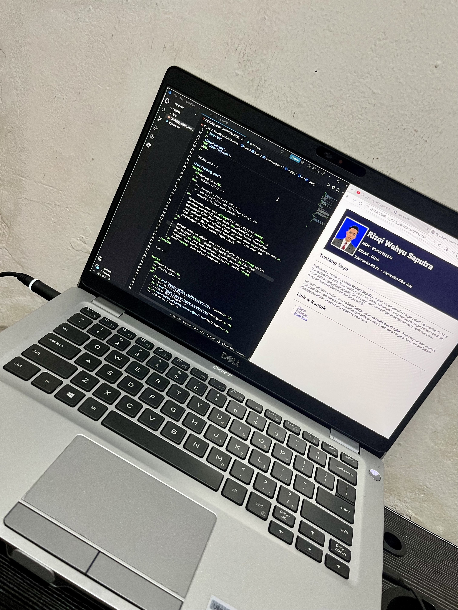
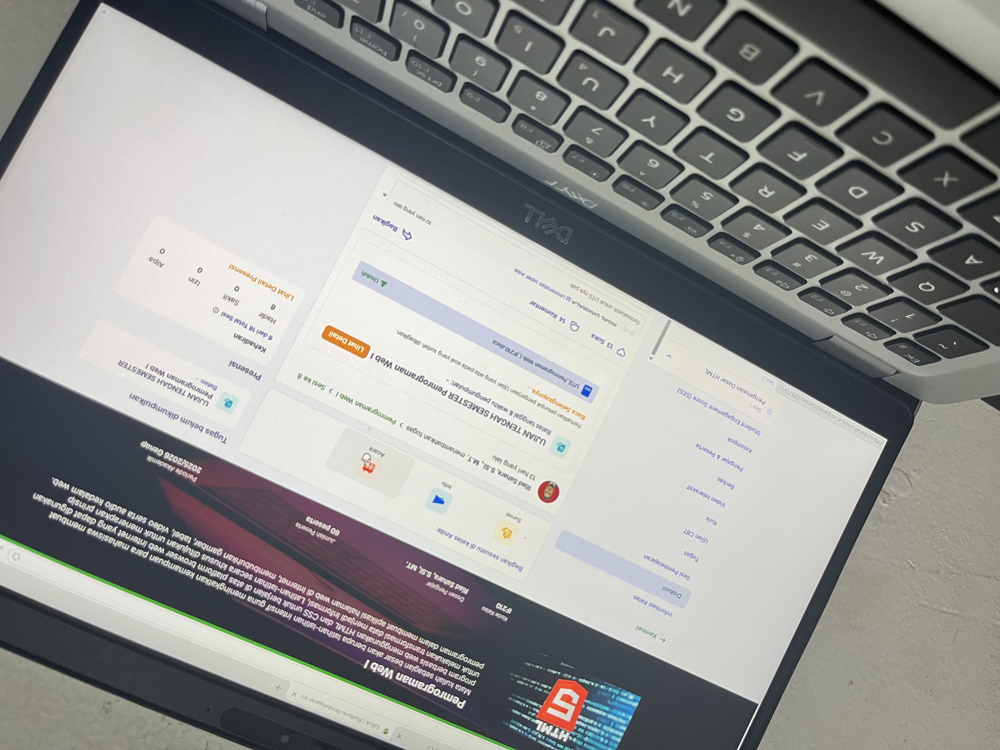
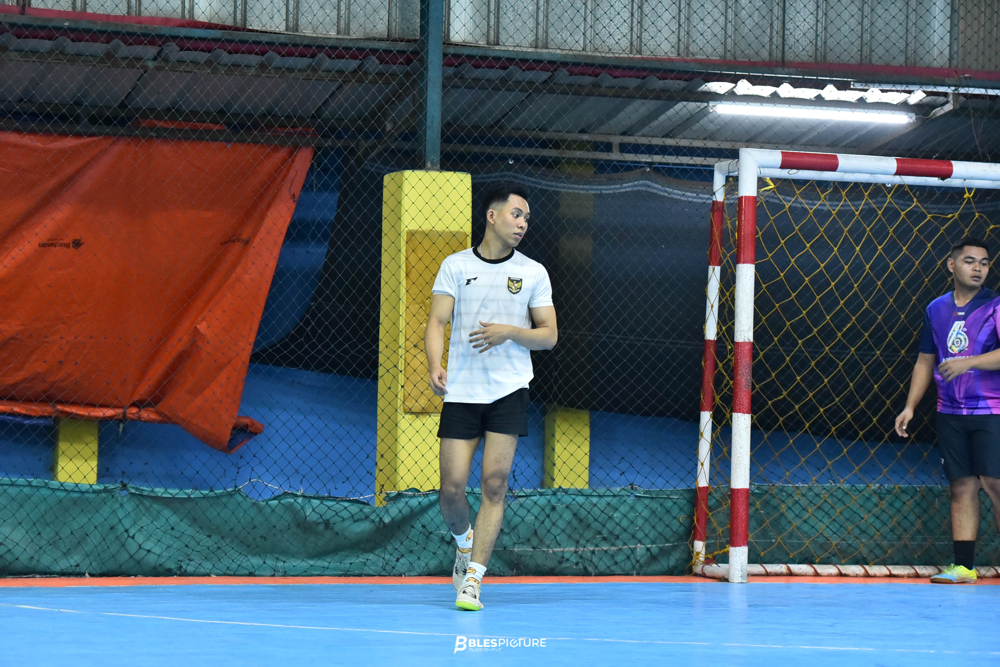

NIM : 250401010478
KELAS : IF210
Informatika PJJ S1 -- Universitas Siber Asia
Perkenalkan, Nama saya Rizqi Wahyu Saputra, mahaiswa semester[2] progam studi Informatika PJJ S1 di Universitas Siber Asia. Saya adalah mahasiswa Teknik informatika yang memiliki semngat belajar tinggi dan minat dalam pengembangan web. Saat ini saya aktif mempelajari Pemograman web, basis data, dan pengembangan aplikasi memalui tugas kuliah.
Sebagai mahasiswa online, saya terbiasa belajar secara mandiri dan disiplin. Terget saya adalah menjadi Full Stack Developer yang mampu membangun aplikasi berbasis web yang berguna. Saya percaya bahwa Kkonsistensi adalah kunci utama belajar pemograman.

Kegiatan Proyek Website Menggunakan HTML dan CSS

Mengikuti Perkuliahan dan Mengerjakan Tugas melalui LMS Secara Daring

Berolahraga Rutin untuk Menjaga Kesehatan dan Meningkatkan Disiplin Diri
| Pendidikan | Nama Sekolah | Jurusan | Tahun |
|---|---|---|---|
| SD | SD 179/1 Bajubang | - | 2010-2016 |
| MTS | MTS Irsyadul Ibad | - | 2017-2019 |
| SMA | SMAN 5 Batang Hari | MIPA | 2020-2022 |
| SI | Universitas Siber Asia | Informatika PJJ S1 | 2026-Now |
| No | Skill | Kategori | Level |
|---|---|---|---|
| 1 | HTML5 | WEB | Menengah |
| 2 | CSS | WEB | Menengah |
| 3 | C++ | Progamming | Pemula |
| 4 | MySQL | Data Base | Pemula |
© 2026 · Rizqi Wahyu Saputra · NIM: 250401010478· IF210 · Pemrograman Web I · UNSIA